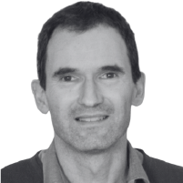
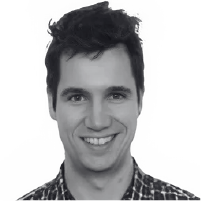
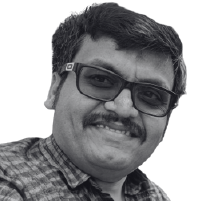
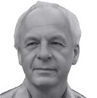

Organized by
Capella Days 2024 is organized by Obeo and Thales.
Capella Days regularly brings together the community of Capella and Arcadia:
Capella Days is your opportunity to learn from Capella ecosystem members! Benefit from the experience of industrial adopters who have sucessfully deployed an MBSE approach with Arcadia and Capella on their projects.
Capella Days 2024 is organized by Obeo and Thales.
Capella Days 2024 is sponsored by vibrant members of the Capella ecosystem:
You are a provider of services or products related to Capella?
Support the event and gain visibility from the Capella practitioners by sponsoring Capella Days.
| Time | Talks | Speakers |
|---|---|---|
| 3:30 pm UTC+1 | Welcome and Introduction | |
| 3:35 pm UTC+1 | Adoption of ARCADIA and Capella to Develop an Elimination Process of Radioactive Waste by Melting industrial process | scientific research | nuclear |
Luca Bruno (CERN) |
| 4:25 pm UTC+1 | MBSE-Based IVV Approach co-engineering | defense | optronic |
Clara Biaudet Aboudaram (Thales) Olivier Hachet (Thales) |
| 5:15 pm UTC+1 | Implementing Systems Engineering in Brazilian Synchrotron: A Workflow for Enhanced Beamline Design co-engineering | scientific research |
Cassiano Bueno (Brazilian Center for Research in Energy and Materials) Débora Alves (Brazilian Center for Research in Energy and Materials) Gabriel Moreno (Brazilian Center for Research in Energy and Materials) |
| 6:05 pm UTC+1 | Closing |
3:30 pm UTC+1 = 3:30 pm CET (Paris) = 11:30 am UTC-3 (Brasilia) = 9:30 am EST (New York) = 6:30 am PST (Los Angeles)
| Time | Talks | Speakers |
|---|---|---|
| 3:30 pm UTC+1 | Welcome and Introduction | |
| 3:35 pm UTC+1 | Enhancing Industrial Equipment Reengineering with Model-Based Systems Engineering re-engineering | industrial manufacturing |
Jesko Drewes (Siemens Digital Industries Software) Cedric Czap (Siemens Digital Industries Software) |
| 4:25 pm UTC+1 | Leveraging System Architecture Models for Diagnosis of High-Tech Systems digital diagnostic | industrial manufacturing | high-tech systems |
Thomas Nägele (TNO-ESI) |
| 5:15 pm UTC+1 | Realizing the Full Value of MBSE Models through Digital Thread Implementation at Applied Materials digital thread | semiconductor equipment |
Anbarasu Mullainathan (Applied Materials) Orlando Trejo (Applied Materials) Subhash Kalavar (Applied Materials) |
| 6:05 pm UTC+1 | Closing |
3:30 pm UTC+1 = 3:30 pm CET (Paris) = 11:30 am UTC-3 (Brasilia) = 9:30 am EST (New York) = 6:30 am PST (Los Angeles)
| Time | Talks | Speakers |
|---|---|---|
| 9:30 am UTC+1 | Welcome and Introduction | |
| 9:35 am UTC+1 | Example of How Capella Can Be Used for CubeSat Development software design | high-tech systems | space |
Masahiko Yamazaki (Nihon University) Masaki Naito (Nihon University) |
| 10:25 am UTC+1 | Leveraging Capella and ARCADIA for Satellite System Design and Integration subsystem integration | mission planning | space |
George Savio (Pixxel Space Technologies, Inc) Rahul Konidena (BlueKei Solutions) Tanmay Dube (BlueKei Solutions) |
| 11:15 am UTC+1 | Enabling MBSE with Simulation to Perform System Analysis for SOLARIS simulation | scientific research | space |
Serena Brizio (Thales Alenia Space) Stephan van Beek (MathWorks) Marco Bimbi (MathWorks) Lorenzo Guarino (MathWorks) |
| 12:05 pm UTC+1 | Closing |
9:30 am UTC+1 = 2:00 pm IST (Pune) = 4:30 pm CST (Beijing) = 5:30 pm JST (Tokyo) = 7:30 pm AEST (Sydney)
| Time | Talks | Speakers |
|---|---|---|
| 3:30 pm UTC+1 | Welcome and Introduction | |
| 3:35 pm UTC+1 | Accelerating Railway Digitization: Scaling Up MBSE in a High-Paced Organization co-engineering | large organization | railway |
Viktor Kravchenko (DB InfraGO AG) Moritz Weber (DB InfraGO AG) Julius Berges (DB InfraGO AG) |
| 4:25 pm UTC+1 | Application of the Arcadia Method on a Bulk Carrier with Siemens Teamcenter PLM Integration ghg reduction | plm integration | maritime |
Mathias Dreier (Graz University of Technology) Matthias Bajzek (Graz University of Technology) |
| 5:15 pm UTC+1 | MBSE Confidentiality Management and Security Analysis of Capella Designs security policies | defense | research |
Michel Bourdellès (University of South Brittany) |
| 6:05 pm UTC+1 | Closing |
3:30 pm UTC+1 = 3:30 pm CET (Paris) = 11:30 am UTC-3 (Brasilia) = 9:30 am EST (New York) = 6:30 am PST (Los Angeles)
The European Organization for Nuclear Research (CERN) has operated high-energy accelerators for 70 years of research in fundamental physics. CERN’s scientific activities currently produce up to 640 tons of radioactive waste (RW) per year, which are generated by the interaction between high energy particles and equipment present inside the accelerator complex. CERN reuses activated material as far as possible, the rest that cannot be reused or recycled is eliminated in dedicated disposal facilities for radioactive waste of the two Host States, France and Switzerland.
The ARCADIA methodology and the Capella tool were used for the first time by the CERN Radiation Protection Group to conceive and specify an effective process for the elimination by melting of metallic radioactive waste. A project was launched accordingly in 2019, whose aim was to prove the feasibility of the new process, termed “MAST” (Melting of Activated STeel). As a result, a batch of 19 m3 of Low-Level/Intermediate-Level metallic radioactive waste was successfully selected, characterized and then melted at the end of 2022, resulting in 8.3 ingots (1.9 m3) and 0.15 m3 of slag that were successfully disposed of in June 2023.
This talk provides an overview of how the ARCADIA methodology guided in the development of a complex RW industrial process as MAST by means of graphical elements alone. The Capella software was instrumental, providing a rich set of diagrams that covered all the design needs; it generated automatically a textual specification of the process that was required by the auditing French Authorities but that was actually never used throughout the development, implementation, and audit: the diagrams conveyed all information needed and served as a clear basis for its understanding when discussing with the development and auditing teams. Differences in the educational backgrounds of technicians, engineers or physicists played little or no role at all.
 |
Luca Bruno (CERN)Luca Bruno studied nuclear engineering at the University of Palermo (Italy). After graduating, he moved to Germany, to work for the nuclear fusion project ITER and then to Switzerland, where he is active in the field of particle accelerator engineering since 1998. He is currently project leader of the new radioactive waste treatment and interim storage center of CERN, the European organization for nuclear research. |
In a dynamic industrial context, Thales faces major challenges, including the need to adopt modern practices and integrate new technologies to remain competitive on the global market.
Thales recognizes the importance of digital transformation and model-based engineering (MBSE) in improving efficiency, quality and collaboration within the company. This drive for modernization is reflected in initiatives to rethink traditional working methods and adopt more agile and intelligent approaches.
Co-engineering is a collaborative process in which players work together simultaneously to design and develop solutions. It is based on a shared vision of the solution, where the different engineering processes jointly perform analyses, make decisions and control risks. One of the objectives of co-engineering is to get IVVQ teams to collaborate with development teams right from the needs analysis stage.
The aim is to enable IVV to use an Addon (called RMIVV) efficiently and intelligently in their activities. We aim to facilitate the definition of development increments as well as the integration schedule, using the Capella model associated with their projects. By optimizing the use of the add-on and providing a tool based-process, the IVV team will be able to speed up verification and validation processes, thereby reducing project delivery times.
Finally, one of the objectives is to facilitate the definition of development increments using the ARCADIA method via the CAPELLA tool, thereby reducing project delivery times, all through Co-Engineering.
Clara Biaudet Aboudaram (Thales)Clara Biaudet Aboudaram is an Embedded Systems Engineer, recently graduated from ECE Paris in the 2024 graduating class. Passionate about new technologies and innovation, Clara completed a six-month internship at Thales, where she worked on the RMIVV project within Capella, an add-on that helps define increments. Having recently completed her studies, she has just entered the workforce as a full-time engineer at Thales, where she continues to contribute to the RMIVV. |
|
|  |
Olivier Hachet (Thales)Olivier Hachet contributes to one of the engineering transformation projects for Thales Optronic business line, promoting a tool-based process that will enable projects to deploy a model-based engineering approach taking into account each of the disciplines involved in the development of embedded equipment. He began his career at Thales as a software architect and contributed to the standardization of component-oriented software approaches such as lwCCM and D&C. The particular need of embedded systems to ensure continuity between system engineering and software engineering naturally led him to take a strong interest in MBSE. |
Among the range of particle accelerators, synchrotron light sources accelerate electrons close to the speed of light to emit intense X-ray beams, which can be used to investigate in detail an infinity of materials, from pre-salt rocks to cells. The Brazilian Center for Research in Energy and Materials (CNPEM) hosts SIRIUS, one of the few 4th-generation synchrotron light sources in operation worldwide, allowing much faster and precise experiments.
To fully exploit the capabilities of this advanced facility, experimental systems such as beamlines and end stations are required to meet stringent mechanical, thermal, and optical performance criteria. They now feature significantly more complex architecture and design, sometimes requiring position resolution and stability as fine as a few nanometers, and data acquisition rates of several kHz.
In response to this growing complexity, a system engineering workflow has been developed and is currently under evaluation by one of SIRIUS engineering teams. The workflow encompasses the beginning of the project lifecycle, from user needs assessment to high-level design , also including requirements management and early trade-off analyses. The last is only possible due to the possibilities offered by MBSE tools, which allow the connection between different engineering models, from different specialties. Nevertheless, the requirements management must accommodate the communication or knowledge transfer between scientific and engineering stakeholders, which also imposes a challenge to the workflow. To deal with these different aspects of the project, a connected software ecosystem is proposed, integrating tools such as Capella, Ansys ModelCenter and TraceCloud. This presentation will cover the proposed workflow and software ecosystem, practical applications in current projects at SIRIUS, a discussion of overcome challenges and an overview of future perspectives in systems engineering.
Cassiano Bueno (Brazilian Center for Research in Energy and Materials)Cassiano Bueno is a mechanical engineer with nearly 8 years of experience on the beamline instrumentation design team at the Brazilian Synchrotron Light Laboratory. Currently, he works on the design and integration of experimental end stations. Over the past year, Cassiano has collaborated with colleagues at LNLS to study and apply systems engineering to Sirius projects. |
|
Débora Alves (Brazilian Center for Research in Energy and Materials)Débora Alves is a Mechanical Engineer with experience in synchrotron project integration and scientific instrumentation. Currently at Sirius in the MArE (Model-based Architecture of Experimental Systems) group, her work is focused on developing and implementing a workflow to take requirements engineering through the design and implementation phases of projects. |
|
Gabriel Moreno (Brazilian Center for Research in Energy and Materials)Control and Automation (Mechatronics) Engineer, graduated from UNICAMP in 2015, currently coordinating the MARÉ group at the Brazilian Synchrotron National Laboratory (CNPEM - LNLS), with the group mission of implementing Model-Based Architecture for the next experimental Systems in Sirius. With 15 years of experience in synchrotron beamline instrumentation, gabriel specialized in precision engineering, particularly in designing and commissioning experimental stations and nano-positioning systems. |
In the dynamic environment of industrial manufacturing, the continuous improvement of machinery is essential to maintain competitiveness and meet evolving quality standards. This presentation explores the reengineering of a quality test machine for bottles using Model-Based Systems Engineering (MBSE) using Capella.
At the beginning the quality test machine is introduced, detailing its current functionalities and the challenges necessitating its improvement. Using Capella, the existing system is modeled with the aim to create a comprehensive representation of the machine's current state. This model serves as the foundation for identifying improvement opportunities and defining the system's constraints and potential areas for optimization. Subsequently, a model with the proposed enhancements is developed and presented.
Based on this example, the talk will elaborate how Model-Based System Engineering can be applied in an industrial manufacturing context. The principles and methodologies employed in this case study can be generalized to reengineer a wide range of industrial equipment, from assembly lines to packaging systems. By systematically modeling existing systems, identifying areas for improvement, and simulating proposed changes, MBSE provides a structured and scalable approach that can be adapted to different types of machinery and production environments.
Attendees will gain insights into how a model-based approach, particularly through the use of Capella, structures and therefore simplifies the reengineering process. With this presentation it is highlighted how Capella can be used to leverage the optimization of industrial equipment and processes.
Jesko Drewes (Siemens Digital Industries Software)Jesko is part of the Systems Engineering Domain at Siemens Digital Industries Software. Before that I studied electrical engineering at the DHBW Stuttgart. |
|
Cedric Czap (Siemens Digital Industries Software) |
High-tech system manufacturers are increasingly interested in methodologies to support the servicing of their systems. The growing complexity of these systems, coupled with the criticality of their performance, necessitates advanced tools and techniques for troubleshooting failures and minimizing unexpected downtimes. Additionally, it is challenging to scale service organizations to meet the demands of a rapidly expanding installed base. To address these needs, we propose a model-driven methodology for diagnostics, in which, via a digital diagnostic reasoning system, we leverage design information to assist the service engineer in the troubleshooting process.
A diagnostic model is at the core of the proposed methodology. This model mainly contains information on the functional dependencies between the different subsystems and modules in the system. The structure of the model is based on the system’s functional breakdown, functional exchanges and the deployment on hardware, as they are modelled in Capella. Information about system observables and tests is added to relate field observations to the appropriate system functions. Upon usage, the observations from a troubled system in the field are provided to such a diagnostic model, which then uses the functional dependencies to reason over the possible root-causes.
In this talk, we will show how we use Capella as the main source of information for our diagnostic models and illustrate the use of such a model through a demo. We will also discuss some of the challenges we are still facing and possible next steps.
|  |
Thomas Nägele (TNO-ESI)I've obtained by PhD in Computer Science from the Radboud University in Nijmegen in 2020. In the past year, I have been working on the development of diagnostic methodologies for high-tech systems at TNO-ESI. These projects were always conducted together with large industrial partners in the Eindhoven area. |
Model-Based Systems Engineering (MBSE) has redefined the paradigms of systems engineering, and Capella stands out as a quintessential MBSE tool. One of the emergent challenges in this space is the seamless translation of information from MBSE models into actionable data for downstream applications. Historically, the product design and validation processes have been reliant on cross-functional engineering teams collaborating with standalone documentations/systems thus making it slower and ineffective to do design iteration.
Using a case-study from the semiconductor equipment industry, our presentation describes a method of leveraging Capella MBSE models to streamline the Product Development process by establishing end to end traceability from Requirements to MBSE Models to CAD and CAE digital artifacts. Utilizing Teamcenter, Pycapellambse, Jupyter Notebook, we automated the extraction of vital MBSE model objects and its design parameters, essential for generating the relevant input for CAE analysis. Also seamlessly integrating Capella (SMW) into Teamcenter where Requirements and CAD artifacts are managed thus enabling the creation of Digital Thread. Having this type of tight connections between various digital artifacts from upstream to downstream in an enterprise level PLM system provides the much-needed data accessibility, fidelity and helps Engineers do quick Impact Analysis when there is a request for change in requirements or design.
This presentation will offer participants:
Anbarasu Mullainathan (Applied Materials)Technology & Digital Transformation Enthusiast with Entrepreneurial & Growth mindset. 18+ Years’ experience in Software Development, Support, Program Management & Process Improvements in Product Lifecycle Management (PLM), CAD & other Engineering/Manufacturing IT applications with Six-Sigma Green-Belt Certification. Managed Teamcenter Customization, Implementation & Support Projects for Global Companies and gained an in-depth knowledge in Engineering, Manufacturing & Supply Chain Business Processes. |
Orlando Trejo (Applied Materials)Digital Engineering Director |
|  |
Subhash Kalavar (Applied Materials)Experienced Associate Director with a demonstrated history of working in the semiconductors industry. Skilled in Product Lifecycle Management, Requirements Analysis, Global Delivery, Software Development Life Cycle (SDLC), and Project Management. |
In the presentation, we will mainly talk about how we use Capella and how we develop software for the nano satellite.
A joint project between Nihon University and the University of Shizuoka is developing a 6U satellite called PRELUDE. It will detect precursors of earthquakes in the ionosphere. We have started using Capella in last year and so far, we are using Capella for software development. It is a big problem for university-developed nanosatellites that the mission failure rate is more than 50%. The software controls the satellite once it is in orbit and it is not easy to reprogram, so it is important to make it flexible and robust. We use Capella to do that.
Software design can be difficult because programmers don't always see the big picture. It is hard to know if the software will meet all the requirements. Requirements can be divided into functional and non-functional requirements. Non-functional requirements specify criteria that can be used to judge the operation of a system, rather than specific behaviors. Although functional requirements are easy to find from a user’s point of view, non-functional requirements are difficult to find. In this scene, Capella can be used effectively because it has both a black-box approach, which reveals user needs, and a white-box approach, which is important for thinking about the internal system. Our satellite’s software has a layered architecture where each layer is compatible with Arcadia. For example, the logical layer in Capella is referenced when we write code for the driver layer. This methodology addresses the challenges of software development.
We are also looking at using Team for Capella to create a complete satellite model. This is a big challenge for university labs, where the knowledge base gets weaker with each new group of graduates. Not only that, building the whole system model helps us to share knowledge and understand the system better, which helps us to make it better.
Masahiko Yamazaki (Nihon University)Dr. Masahiko Yamazaki is an Associate Professor at the Department of Aerospace Engineering, College of Science and Technology, Nihon University, Japan. He specializes in CubeSat design and development methods, space systems engineering education, and the dimensionality reduction of mathematical models. Currently, he is developing a 6U CubeSat named PRELUDE to observe ionospheric variations preceding earthquakes, with a scheduled launch in FY 2025. He has developed the HEPTA-Sat international training program, to enable anyone to learn about nanosatellite systems. |
|
Masaki Naito (Nihon University)Masaki Naito is a fourth-year undergraduate student at the Yamazaki Lab, Department of Aerospace Engineering, College of Science and Technology, Nihon University, Japan. Sub-project manager of PRELUDE, a W6U-sized nanosatellite. Currently in charge of system integration and software development of the on-board computer. Masaki is researching for the CubeSat software modeling and optimization by using MBSE including Capella as graduation research. |
Satellite design integrates various disciplines to achieve desired system capabilities, considering factors like launch stresses, space environment, and mission objectives. Effective management of complex interdependencies is crucial, aided by System Architectures (SA) and Interface Control Documents (ICD) that ensure consistency and collaboration. A system model with a derivation framework further enhances efficiency and provides a single source of truth.
Pixxel's framework combines the ARCADIA method with the Capella tool to address challenges in subsystem integration and mission planning. A hypothetical imaging satellite design demonstrates this approach, starting with Mission Requirements and leading to a Reference Mission Profile. Functional aspects of the Spacecraft and Ground Segment are modeled in Capella, with established design patterns directly incorporated into System Architecture Blank (SAB) and Exchange Scenarios (ES). New requirements are addressed using the System Dataflow Diagram (SDFB) before integration into SAB and ES diagrams, effectively representing the Reference Mission and Architecture.
A well-defined Mission Architecture ensures consistent traceability across all levels. Telemetry and telecommand interfaces are formalized using Capella's Contextual Internal Interface (CII) and Contextual External Interface (CEI) diagrams, with standardized templates enhancing clarity and reusability.
Imaging satellites require capabilities such as Power Generation, Orbit Maintenance, Pointing, Thermal Control, Command and Data Handling, Payload Operation, and Launch Lifecycle. These are categorized as Capella System Capabilities, making the system model straightforward to navigate and applicable across missions. The technology-agnostic logical-level decomposition and standardized architectural viewpoints ensure a cohesive, reusable framework. Pixxel's ongoing implementation continues to leverage these benefits.
George Savio (Pixxel Space Technologies, Inc)Satellite System Engineer |
|
Rahul Konidena (BlueKei Solutions)MBSE Engineer |
|
Tanmay Dube (BlueKei Solutions)Systems Engineer |
In this presentation we will explore the joint use of Model-Based System Engineering (Capella) and the use of Simulation (System Composer, Simulink) to perform architecture optimization and system analysis in the context of the project SBSP (Space-Based Solar Power, part of the ESA SOLARIS program).
Serena Brizio (Thales Alenia Space)Serena Brizio is an aerospace engineer specializing in MBSE, currently at Thales Alenia Space. With a Master's from Politecnico di Torino, she has led MBSE projects at Airbus since 2020, focusing on risk analysis, system architecture, and tool development, and she was also a MBSE teacher at INSA in Toulouse. Then she joined Thales with the role of Avionic System Engineer for the space exploration program. |
|
Stephan van Beek (MathWorks)Stephan van Beek brings over 15+ years of dedicated service at MathWorks, Eindhoven, where his role as a technical specialist has made him a key player in the Systems Engineering and Embedded Systems (FPGA, SoC) landscape. Stephan connects with customers across Europe and his ability to merge the principles of Model-Based Systems Engineering (MBSE) with Model-Based Design (MBD) have made him a go-to expert in his field. |
|
Marco Bimbi (MathWorks)Marco Bimbi is a technical specialist for Model Based Systems Engineering workflows for safety critical applications. Marco joined MathWorks in 2022. Before joining The MathWorks, he has worked for 10+ years in aerospace as well as rails industries such as Rolls-Royce and Deutsche Bahn focusing on Systems Engineering workflows for safety critical applications. |
|
Lorenzo Guarino (Thales Alenia Space)Lorenzo Guarino is an aerospace engineer specialized in the space field, currently employed at Thales Alenia Space. He earned his Master’s Degree through a collaboration between Politecnico di Torino and Thales Alenia Space, focusing on a dynamic application of Model-Based Systems Engineering (MBSE) for the ESA SOLARIS project. After his thesis, he joined Thales as a Mission Analysis and Operations engineer. |
At Digital Rail for Germany, a railway sector initiative, we work on digitalization and application of latest technologies to bring more capacity to the existing network, increase quality and punctuality. To manage the complexity of the challenge at hand we adopted a Model-Based Systems Engineering (MBSE) approach and created an own engineering environment around Capella.
We use Capella for both internal development projects and together with our partners within Europe Rail Joint Undertaking. Due to the complexity of our environment Capella alone was not enough so we developed an engineering environment around Capella and integrated it with the rest of our engineering toolchain. Most of the bespoke development we've done is public on GitHub.
However, scaling MBSE up across a large organization presents unique challenges. These include enabling collaboration on models across different organizations, making MBSE content accessible to non-MBSE stakeholders, and addressing the need for efficient training. Our presentation outlines our strategies to overcome these challenges:
This talk will provide valuable insights into how we address these challenges, ensuring that MBSE can be scaled effectively to support the digital transformation of Germany's railway system.
Viktor Kravchenko (DB InfraGO AG)Viktor Kravchenko is a Systems Engineering specialist with 15+ years of experience in aerospace and railway domains. In his current role at Digitale Schiene Deutshland he leads the Systems Engineering Toolchain team that takes care of the (MB)SE engineering environment and simplification of daily engineering work. |
|
Moritz Weber (DB InfraGO AG)Moritz Weber joined Digitale Schiene Deutschland in 2021 and leads development activities aimed at enhancing the Capella experience and improving collaboration through the Capella Collaboration Manager. His work involves overseeing the Capella environment across various servers, ensuring seamless integration in diverse setups. |
|
Julius Berges (DB InfraGO AG)Dr.-Ing. Julius Berges has been part of the Digital Rail for Germany initiative since 2024. As a member of the Systems Engineering Methods team, he specializes in advancing Model-based Systems Engineering (MBSE) methodologies to drive innovation and efficiency in rail systems. |
The maritime industry is undergoing a major change to achieve the reduction of greenhouse gas (GHG) emissions from existing and future vessels. Marine shipping accounts for ~ 2.89% of global CO2e emissions in 2018, which is ~11% of the global transportation CO2e emissions in 2020. After the International Maritime Organization (IMO) introduced the “Initial IMO Strategy on Reduction of GHG Emissions from Ships” in 2018, the strategy was revised in 2023 and now aims to achieve net-zero GHG emissions from international shipping by around 2050.
Reaching this target demands enhanced operational efficiency, compliance with increasingly stringent regulations, as well as the integration and alignment of different systems within a complex network of stakeholders. New approaches are needed to manage the increasing complexity of the maritime industry and ship development, as the traditional ship design process lacks the ability to describe the operational context, stakeholder interactions, or alternative design options. Model-based systems engineering (MBSE) approaches, such as the Arcadia method, offer a promising strategy to gain a better understanding of the as-is situation and to develop advanced solutions.
This case study demonstrates the application of the Arcadia method for the maritime industry, focusing on the creation of a Siemens system modeling workbench (SMW) system architecture model and its integration into Siemens Teamcenter to realize a comprehensive product lifecycle management (PLM) approach. Selected system model elements are linked with other development artifacts such as requirements in order to demonstrate the possibilities of using system architecture models in ship development. The integration of Arcadia and the SMW system model into the ship development process and further use cases in this context are discussed.
Mathias Dreier (Graz University of Technology - Institute of Machine Components and Methods of Development)Mathias Dreier, BSc, is a Master’s student and university assistant in Mechanical Engineering and Business Economics at Graz University of Technology. During an exchange year at the University of Tokyo, Mathias conducted his Master’s thesis on applying model-based systems engineering (MBSE) in the evolving maritime industry. In addition to his academic roles, Mathias currently works as a project engineer at ANTEMIA GmbH. |
|
 |
Matthias Bajzek (Graz University of Technology - Institute of Machine Components and Methods of Development)Dipl.-Ing. Dr.-techn. Matthias Bajzek, BSc, is a PhD researcher at Graz University of Technology. He holds a Bachelor’s, Master’s, and Doctoral degree in Mechanical Engineering and Business Economics. His research primarily focuses on the foundations of systems engineering and its application in automotive engineering. In addition to his academic work, Matthias is the co-founder and head of R&D and product development at ANTEMIA GmbH. |
The use of modelling tools for the design of industrial systems is increasingly replacing the documentation production resulting from a classic system design process. One of the problems to be solved in order to fully succeed in this transition is information confidentiality management. It is also necessary to propose a system design process that allows an evolution through the whole design life cycle, and that guarantees a coherent design for a given level of confidentiality. To the best of our knowledge, neither current Model Based System Engineering (MBSE) tools, nor academic research propose solutions to this specific issue.
In this paper, we propose a model-based system design process to manage elements belonging to different levels of confidentiality. The process guarantees a plurality of confidentiality levels in line with Bell-Lapadula security policies for the secure management of system design and specification, as required for the protection of national and coalition defense information. It includes the separation into enclaves and adaptations guaranteeing the preservation of confidentiality and integrity to authorized users. We describe how this process can be leveraged for current modelling tools by exploiting existing multi-user functionality.
|  |
Michel Bourdellès (University of South Brittany)Michel Bourdellès has worked at University of South Brittany (Université Bretagne Sud) as a teacher-researcher since 2021. He previously worked as an engineer in a large defense company for more than 20 years. |